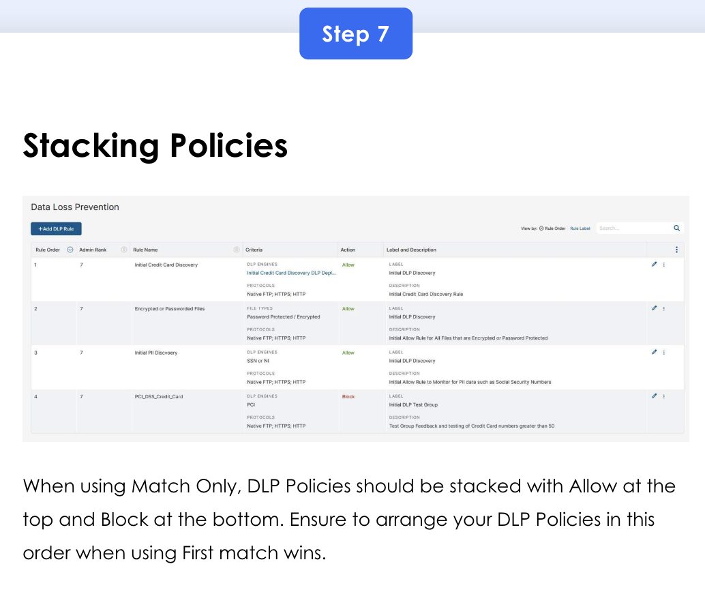
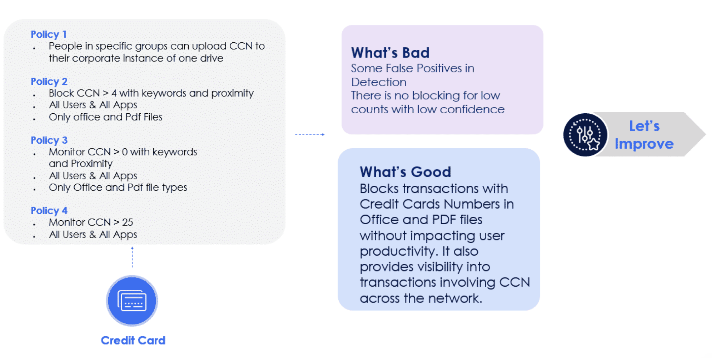

Zscaler's Data Loss Prevention story — Content-Driven vs Context-Driven policies, First Match vs Evaluate All policy ordering, the 10-step iterative operationalising loop, the 7-step deploy lifecycle (Implement → Build → Allow → Tune → Block → Test → Production), EDM/IDM/OCR, SaaS Security API, and three real-world use cases (AI/ChatGPT prompts, Endpoint DLP for employee offboarding, Outbound Email DLP).
Data security is where Zscaler stops being a network product and starts being a compliance product.
Access Control governed who could reach what. Cyberthreat governed what they were protected from. Data Security governs what leaves the building — and unlike threat protection where false positives are tolerable, DLP false positives wreck trust fast. The consultant's job is the slow, iterative tuning loop: Allow → tune → Block → tune → Production.
💭THINK FIRST · OVERVIEW
Four outcomes — Describe / Explain / Operationalize / Deploy. "Operationalize" is the new verb. Cyberthreat got "Apply"; Data Security gets "Operationalize." Why the difference?
DLP outcomes include "Operationalize the DLP policies to reduce false positives." Why is false-positive reduction elevated to its own learning outcome, instead of being a side-effect of normal tuning?
Cyberthreat said "rules must sit above general access rules." DLP says "rules must be stacked Allow-first-then-Block under First Match." Why does the stacking advice flip when you move from threat to data?
One use case in this course is ChatGPT prompts. Why is "preventing PII from being typed into a chat box" a DLP problem and not a Cloud App Control problem?
Q1 — MODEL ANSWER
In threat protection, a false positive (a blocked legitimate file) is irritating but recoverable — IT moves on. In DLP, a false positive blocks a salesperson from emailing a contract to a customer, or HR from sending a payroll spreadsheet. Each one is a phone call, an audit trail, and a credibility hit for "the system." False-positive tuning isn't optional polish; it's the difference between a deployment that survives Week 2 and one that gets shut off.
Q2 — MODEL ANSWER
Cyberthreat is binary at the rule level ("this URL is malicious; block"). DLP is graduated — exceptions for specific apps/groups need to fire before the broad block, otherwise everyone gets caught. So with First Match: Allow rules (the carve-outs) sit at the top, Block rules (the broad rules) sit at the bottom. With Evaluate All, the most restrictive wins regardless of order — which is why moving from First Match to Evaluate All requires deleting all DLP policies and rebuilding.
Q3 — MODEL ANSWER
Cloud App Control can allow/deny access to ChatGPT but can't see what's typed into the prompt. DLP inspects the actual payload — the words the user types and the file they paste — and can block submission of PII patterns. The two layers work together: Cloud App says "ChatGPT is permitted for Marketing," DLP says "but no credit card numbers in the prompt."
COURSE OVERVIEW
Welcome to Data Protection Services
This course provides an overview of how to operationalise and deploy Zscaler data protection policies. Additionally, you'll identify which data protection policies need to be implemented based on various organisational needs.
1 · Course Overview
A quick recap of Zscaler for Users — Administrator (EDU-200) and Engineer (EDU-202) courses on data protection.
2 · Data Protection Policies Implementation
Explore the Zscaler DLP policies deployment based on various organisational needs.
By the End of This Course, You'll Be Able To:
Describe the policies that Zscaler provides to secure data on all channels.
Explain the importance of policy order and creation considerations for effective DLP deployment.
Operationalize the DLP policies to reduce false positives and ensure seamless implementation.
Deploy the data protection policies based on the organisational needs.
Analogy
Data Security is the shipping department of a high-volume warehouse. Boxes leave all day, every day; the customer trusts that nothing sensitive walks out by mistake. The shipping clerk (DLP engine) opens every parcel above a threshold (Content-Driven) and checks the sender + recipient + destination on every form (Context-Driven). Mistakes here aren't just leaks — they're a salesperson unable to send a contract, an HR rep unable to email payroll. The clerk earns trust through accuracy.
📷 A1.png — add this image to the folder
Flat minimalist cartoon illustration of a busy warehouse shipping department as an analogy for Data Security. Wide composition with rows of conveyor belts moving labelled parcels. Centre foreground: a cheerful shipping clerk in a green vest at a desk, opening one parcel to inspect its contents (Content-Driven) while glancing at a separate clipboard with sender/recipient details (Context-Driven). Around her: small categorised bins labelled with tiny icons — a credit card, a passport (PII), a SKU sheet, a source-code printout. A "Pending Allow" tray on the left and a "Block" stamp on the right. Background: parcels flowing toward outbound trucks. Warm warehouse lighting, plants by the office window. Clean geometric shapes, flat illustration style, bold outlines, simple cartoon characters, no text labels, no UI elements, educational infographic feel, modern tech-analogy aesthetic.
ASK A QUESTION
ADD A NOTE
RECAP FROM EDU-200 + EDU-202
Recap from Zscaler for Users — Administrator (EDU-200)
Data protection is the practice of safeguarding sensitive information from unauthorised access, disclosure, alteration, and destruction.
Zscaler Data Protection — In today's digital landscape, the widespread adoption of software-as-a-service (SaaS) and public cloud solutions has significantly transformed how organisations operate. Zscaler's data protection services provide innovative and comprehensive solutions designed to safeguard enterprise cloud data, ensuring that sensitive information remains secure and compliant in an ever-evolving threat landscape. As an important component of Zscaler's data protection platform, it focuses on securing data in motion, at rest, with-cloud, and on endpoints, while also addressing the challenges posed by unmanaged or BYOD devices.
AI-Driven Auto Data Discovery and Classification — leverages AI/ML for data classification across all channels. Provides visibility into where data resides and what protections apply.
Secure Data in Motion — Zscaler's comprehensive DLP engine inspects data in motion by chunking, decrypting, and extracting data across multiple channels.
Secure SaaS Data — Out-of-band SaaS security via API. Uses CASB and DLP capabilities.
Secure Cloud Data — Zscaler Cloud Data Security Posture Management (DSPM) for IaaS/PaaS misconfig and vulnerability discovery.
Secure Endpoint Data — Endpoint DLP for files leaving the device (printing, USB, removable storage, etc.).
Secure BYOD — Browser Isolation for personal/unmanaged devices.
Incident Management — streamlines the process of identifying, analysing, and resolving incidents that disrupt normal operations. It enables end-users to delegate violations through customisable browser-based notifications. SOAR, etc.
Recap from Zscaler for Users — Engineer (EDU-202)
Data protection with Zscaler ensures secure access and safeguarding of sensitive information across the cloud.
Shadow IT visibility with customisable risk scoring, AI/ML-powered automatic data classification, granular policy enforcement through Cloud App Control for 45,000 cloud apps, and enhanced contextual data loss prevention with tenancy restrictions to differentiate between personal and corporate accounts.
Inline DLP — enhances data security with OCR powered by ML/AI to extract and protect sensitive data from images. API integrations with Microsoft's IIP SaK for labelling and enforcing policies, EDM for detecting anomalous user behaviour, comprehensive risk-based policies with predictive analytics, and prevention of data exfiltration of sensitive data through email content and attachments.
Zscaler's Data Security Posture Management (DSPM) solution offers comprehensive visibility and protection for cloud data by identifying its location, type, and access pattern using AI classifiers and DLP engines. The DSPM dashboard provides detailed insights into data distribution, including geographical breakdowns, enabling users to assess and prioritise security risks based on configurations, entitlements, and potential vulnerabilities, and offering clear remediation guidance to mitigate these risks.
Zscaler's DLP solution enables blocking sensitive data uploads to personal cloud storage, use confirmation prompts to educate users and reduce help-desk overhead, and comprehensive dashboards and reports for real-time incident visibility and detailed analytics, all through consistent and intuitive policy settings and analytics.
Zscaler's CASB solution provides comprehensive data security agility by leveraging API integrations for DLP and malware scanning across cloud applications, using existing DLP policies to identify and protect sensitive data, triggering remediation actions for malware, and utilising AppTotal Security to discover, monitor, and revoke access to risky third-party applications through automation and continuous monitoring.
Zscaler Browser Isolation provides secure, clientless access to SaaS and private web applications from unmanaged devices, preventing data exfiltration and maintaining application security. This approach reduces reliance on VDIs by enabling secure, isolated access without direct communication between the client and internal applications, ensuring the security posture of unmanaged devices does not compromise the accessed applications.
Zscaler's Incident Management streamlines the process of identifying, analysing, and resolving incidents that disrupt normal operations. It enables end-users to delegate violations through customisable browser-based notifications. SOAR, Teams, or Zscaler Client Connector, and allows administrators to view essential features of Browser Isolation, such as safe document rendering, evidence collection, automated incident management, and CDR for automated remediation, etc. Additionally, Zscaler Workflow Automation enhances data protection by integrating with Microsoft Sentinel.
ASK A QUESTION
ADD A NOTE
ZSCALER DATA PROTECTION POLICIES
Secure the Crown Jewels — Across All Channels
Sensitive data is considered the enterprise's crown jewels. Zscaler's approach focuses on data in motion, ensuring accurate classification and embedding it across all relevant channels. Zscaler offers extensive data protection across multiple channels, examining data over the web, email, Gen AI apps, SaaS apps, services, and the cloud, with consistent DLP classification for endpoints and BYOD.
Organisations face data breaches that target their sensitive data across these varied channels, risking unauthorised access and potential data loss. Zscaler's robust Data Protection Policies are carefully designed to detect and prevent attacks, ensuring comprehensive security. By deploying Data Loss Prevention (DLP) techniques, Zscaler safeguards sensitive information across all data states, providing a fortified defense against unauthorised access and potential data breaches.
Auto Data Discovery — AI-Powered Classification Across Data Categories
Secure SaaS Data — CASB (Shadow IT & collaboration control), SSPM (Misconfigurations & compliance), Supply Chain (SaaS integrations).
Secure Cloud Data (DSPM) — Data discovery (buckets, VMs, DBs with concentrations), Posture Control (misconfigurations & vulnerabilities), Actionable insights (risk prioritisation).
Web & Email Data in Motion — Inspect structured, unstructured, images. Secure the use of Gen AI apps with inline DLP on prompts and uploads.
Secure Endpoint Data — Endpoint DLP (offline, printing, removable storage).
The Zscaler Data Protection architecture showing AI-powered Auto Data Discovery across five domains: Secure SaaS Data (CASB/SSPM/Supply Chain), Secure Cloud Data (DSPM), Web & Email Data in Motion (inline DLP + Gen AI), Secure Endpoint Data, and Secure BYOD via Browser Isolation — all converging on the Zero Trust Exchange.
💭THINK FIRST · POLICY TYPES
Two DLP policy types: Content-Driven (looks at the data itself — keyword, pattern, AI/ML, EDM, IDM, file-type) and Context-Driven (looks at who's transmitting and how — user/role, device, location, time-of-access).
If Content-Driven inspects the actual payload, why would you ever need a Context-Driven rule? Isn't payload-detection always more reliable than circumstantial signals?
EDM (Exact Data Match) requires uploading a structured table of real sensitive values. IDM (Indexed Document Match) requires uploading whole-document fingerprints. What's the operational cost of each — and why do regulated industries reach for these despite the cost?
Q1 — MODEL ANSWER
Content alone misses intent. A salesperson sending a customer list to a customer at the customer's own domain is fine; the same list to a personal Gmail is exfiltration. Context-driven rules catch the second case without flagging the first. Also, some sensitive content (e.g. industrial control configurations, financial term sheets) doesn't match generic patterns — context is the only signal you have.
Q2 — MODEL ANSWER
EDM cost = building and maintaining a clean, current export of the sensitive table (customer database, employee SSN list); needs refresh whenever the source changes. IDM cost = ingesting and re-fingerprinting documents on every revision. Regulated industries pay because generic pattern detection can't distinguish "any 9-digit number" from "this specific SSN from our customer table" — and the regulator cares about the second.
DLP POLICY TYPES
Two Approaches to Data Loss Prevention
Data Loss Prevention policies are essential for safeguarding sensitive information from unauthorised access and breaches. Zscaler utilises two primary types of DLP policies to provide comprehensive protection — Content-Driven and Context-Driven. Each policy type addresses different aspects of data security, ensuring that all potential vulnerabilities are effectively managed.
CONTENT-DRIVEN
Focus on inspecting and analysing the content of the data itself. Identifies sensitive information based on its contents, regardless of where or how it is transmitted (when sent over a supported port or channel).
CONTEXT-DRIVEN
Focus on the context in which data is being used or moved, applying security measures based on the circumstances surrounding data usage.
Content-Driven Sub-Types
Keyword Scanning — detects sensitive or confidential words or phrases, including credit card numbers, social security numbers, and specific business-related technical terms.
Pattern Recognition — pattern recognition involves detecting specific patterns in data, such as a sequence that matches the format of a credit card or social security number.
Artificial Intelligence or Machine Learning — advanced algorithms can analyse data to detect more complex information types, such as health records or financial information.
Exact Data Match (EDM) — with a defined Exact Data Match template, the system will identify and match against records from a structured data source such as a database export.
Indexed Document Match (IDM) — indexed Document Match (IDM) templates allow you to fingerprint and index critical documents with sensitive data, creating a repository the Zscaler service uses to identify matches in outbound traffic for DLP.
File Type Detection — this method identifies sensitive information based on the file type, such as PDFs, Word documents, or Excel spreadsheets.
Context-Driven Sub-Types
User Identity and Role — different rules based on who is accessing or transmitting the data. For example, a senior researcher might have more permissions than an intern.
Device Security — looks at the device's security level when accessing or transmitting data. For instance, accessing data from a company-secured laptop might be safer than a personal smartphone. Zscaler Client Connector is used to perform Posture Management, e.g. the laptop has CrowdStrike or Microsoft Defender, and the Firewall is enabled and Patches to the Latest Level → Profile Risk Score.
Location Awareness — the policies can be sensitive to the location from which data access is attempted. Accessing data from a secure corporate network might be allowed, whereas attempts from high-risk countries might be blocked.
Time of Access — access to specific data might be restricted by day or week, reflecting typical business hours or specific operational schedules.
Analogy
Content-Driven is the customs scanner — it reads what's actually in your suitcase regardless of who you are. Context-Driven is the passport officer — they check who you are, where you're flying from, what time of day, whether your visa stamps look consistent. Real airports use both. Zscaler's DLP does the same: the scanner catches material, the officer catches intent.
📷 A2.png — add this image to the folder
Flat minimalist cartoon illustration of an airport customs and immigration counter as an analogy for Content-Driven vs Context-Driven DLP. Wide composition. Left lane (Content-Driven): a friendly customs officer at a glowing X-ray belt examining a suitcase that shows tiny icons inside — a credit card, a passport (PII), a small file labelled with a fingerprint (EDM/IDM). Right lane (Context-Driven): a passport officer at a counter studying a traveller's passport, looking at the stamps, photo, departure country, time-of-day clock, and a device-icon badge on the traveller's lapel. Above both: a warm welcome sign. Cheerful round-faced characters, bright warm airport lighting. Clean geometric shapes, flat illustration style, bold outlines, simple cartoon characters, no text labels, no UI elements, educational infographic feel, modern tech-analogy aesthetic.
ASK A QUESTION
ADD A NOTE
POLICY ORDER & CREATION CONSIDERATIONS
Why Is Policy Order Important?
By default, Policy Order is on First Match basis, unless Evaluate All Policies has been enabled.
As the system evaluates each policy in sequence, the first policy that matches the event's criteria (like source IP, destination URL, user group, etc.) will be applied. Once a matching policy is found, the system stops evaluating further policies. This "first match" approach ensures that the most specific policies have precedence and are applied immediately when their conditions are met.
The Evaluate All Rules method is a comprehensive approach to policy enforcement, particularly relevant when configuring inline DLP policies. You can configure exception child rules (subrules) that exclude specific users or groups. Exception rules require the main rule to be matched first. After assessing all rules, Zscaler enforces the rule that prescribes the most restrictive action instead of applying the first match. Ensures the highest level of data protection by prioritising the strictest rule applicable to the situation.
Evaluate All Policies requires a support ticket to be raised.
!
CAUTION
To go from First Match to Evaluate All, you will need to delete all DLP policies. It is recommended that you engage with Zscaler Professional Services before doing this.
Policy Creation Considerations for DLP Deployments
In a First Match configuration — Policies should be configured as ALLOW first followed by BLOCK. More granular/specific policies should be configured, followed by generic policies.
ALLOWEncrypted or Passworded Files — File Types: Password Protected / Encrypted. Protocols: Native FTP, HTTPS, HTTP. Allow rule for files that are encrypted or password-protected (so File Type Control can pick them up downstream).
Rule 3
ALLOWInitial PII Discovery — DLP Engines: SSN or NI. Protocols: Native FTP, HTTPS, HTTP. Initial Allow rule to monitor PII data such as Social Security Numbers.
Rule 4
BLOCKPCI_DSS_Credit_Card — DLP Engines: PCI. Protocols: Native FTP, HTTPS, HTTP. Test-group feedback and testing of Credit Card numbers greater than 50.

The DLP policy stack in ZIA — Initial Credit Card Discovery (Allow), Encrypted or Passworded Files (Allow), Initial PII Discovery (Allow), and PCI_DSS_Credit_Card (Block) at the bottom. This ordering is the First Match Wins pattern: broad allow-discovery rules on top, narrow blocking rules below.
🧠
MENTAL NOTE
First Match (default): Allow → Block, specific → generic. Evaluate All: most-restrictive wins, requires support ticket + deletion of all DLP policies to switch. Engage Professional Services before flipping.
Analogy
Policy Order is the parking-attendant's checklist. First Match is "go down the list, stop at the first sign that applies" — so you list "DISABLED PERMIT — PARK FREELY" above "RESERVED FOR PHARMACY" above "NO PARKING ANYTIME," and a disabled-permit holder with a pharmacy errand gets the free spot. Evaluate All is "check every sign and apply the most restrictive" — same parker still has to park somewhere they can, but the answer is now "the strictest sign wins" no matter the order on the post.
📷 A3.png — add this image to the folder
Flat minimalist cartoon illustration of a tall street post stacked with parking signs as an analogy for DLP policy order. Wide composition. Foreground: a friendly parking attendant standing next to a tall metal pole with a vertical stack of clearly bordered parking signs — green "DISABLED PERMIT" at the top, blue "RESERVED PHARMACY" in the middle, red "NO PARKING" at the bottom. Two side-by-side speech bubbles from the attendant: one labelled "First Match" with a finger pointing to the top green sign; the other labelled "Evaluate All" with the attendant pondering the whole stack and pointing to the red one. A car waits politely in the background. Warm afternoon street light, cheerful round-faced character, plants in a planter box. Clean geometric shapes, flat illustration style, bold outlines, simple cartoon characters, no text labels other than as described, educational infographic feel, modern tech-analogy aesthetic.
ASK A QUESTION
ADD A NOTE
💭THINK FIRST · OPERATIONALISING
Operationalising = iterative / circular: observe the rule, tune it, then block (testing your test groups) and add exceptions for users or departments. Step 1 isn't "deploy a perfect rule" — it's "deploy a rule in Allow mode and watch."
The e-commerce scenario starts with Allow rules in monitor mode before any Block rules. Why this order — what would happen if you led with a Block?
The doc names a specific sequence "Block CCN > 4 with keywords and proximity" followed by "Monitor CCN > 0 with keywords" followed by "Monitor CCN > 25 for all apps." Why three rules instead of one, and what does the count threshold buy you?
Q1 — MODEL ANSWER
If you lead with Block, the very first false positive is a real-user incident — a help-desk ticket, a stressed salesperson, the customer wondering why the contract didn't arrive. Allow-first lets you collect the same data (logs, hit counts, distributions) without creating user pain — then you tune until the false-positive rate is acceptable, and only then flip to Block.
Q2 — MODEL ANSWER
Each rule is a different confidence band. "> 4 with keywords and proximity" = high confidence this is bulk PCI (block hard). "> 0 with keywords" = single match with corroborating signal (monitor — could be legitimate). "> 25 for all apps" = catches the long-tail bulk-exfil attempts even without keyword context (monitor and review). Three rules let you act differently at different confidence levels instead of false-positive-blocking everyone who mentions a card.
OPERATIONALISING DLP POLICIES
Iterative / Circular Process
DLP policies help prevent data loss by monitoring and controlling the transfer of sensitive information across networks. The process is iterative: observe the rule, tune it, then block (testing your test groups), and add exceptions for users or departments — depending on the business case.
Scenario — E-commerce Customer Data Project
SCENARIO
During your project discovery for your customer — an e-commerce company — the following requirements were discovered. An e-commerce company embarks on a data loss prevention project to safeguard sensitive customer information, including credit card data and Personally Identifiable Information (PII). The DLP system is configured to monitor and block the unencrypted transmission of credit card numbers and PII through transaction processes and communication channels.
PROJECT GOALS
1 · Reduce Risk of Data Breaches — Implement stringent DLP measures to prevent unauthorised access and leakage of sensitive data. 2 · Achieve Regulatory Compliance — Enforce proper encryption and access controls for credit card data and PII to ensure adherence to PCI-DSS and GDPR regulations. 3 · Enhance Customer Trust — Demonstrate a commitment to data security, increasing customer confidence and loyalty through transparent and robust data protection practices.
10-Step Operationalising Walkthrough
1
Block Unscannable Files (File Type Rule)
Block files that have been zipped multiple times, use proprietary encryption, or have an unrecognisable MIME type. These cannot be inspected. Note: not a DLP Policy rule — a File Type rule.
Set up Rule Without Content Inspection to Allow with Monitor or Block on Password-Protected / Encrypted file types. Gain visibility for both uploads and downloads.
3
Allow or Caution — Files Over a Size Threshold (e.g. 10 MB)
Large outbound files indicate exfil or oversharing. Initial File Type Control sets Caution for files > 10 or 100 MB (align with customer's Acceptable Use Policy or IT Security Policy).
4
Initial Credit Card Rules After Iterative Improvement
Policy 1: People in specific groups can upload CCN to their corporate instance of OneDrive. Policy 2: Block CCN > 4 with keywords and proximity, All Users & All Apps, Only Office and PDF files. Policy 3: Monitor CCN > 0 with keywords and Proximity, All Users & All Apps, Only Office and PDF file types. Policy 4: Monitor CCN > 25, All Users & All Apps.
5
Other Ways to Reduce Credit-Card False Positives
Disable inspection of URL encoded data; exempt certain known URLs (you don't care about or determine as false positives); add a rule per file-size criteria (e.g. > 2 KB files to your DLP exception); add more Boolean logic in your engine (look for CCN in combination with ML categories such as financial data); work on False Negatives (try reducing your counts for blocking to > 0); add advanced detection techniques like EDM/IDM/OCR.
6
Initial Allow Rule — PII Data After Iterative Improvement, Stacked With Credit Cards
Policy 5: People in HR groups can upload PII to their corporate instance of Workday. Policy 6: Block PII > 4 with keywords and proximity, All Users & All Apps, Only Office and PDF files. Policy 7: Monitor PII > 0 with keywords and Proximity, All Users & All Apps, Only Office and PDF file types. Policy 8: Monitor PII > 25, All Users & All Apps.
7
Stacking Policies (First Match Wins)
When using Match Only, DLP Policies should be stacked with Allow at the top and Block at the bottom. Ensure to arrange your DLP Policies in this order when using First Match Wins.
8
Control Sensitive Data Flows to Unsanctioned Destinations
Use DLP Rule with Content Inspection. Select Personal Apps and enforce by app such as Personal vs Enterprise. Actions: Allow (Monitor) or Block.
9
Control Sensitive Data to SaaS Security API Tenants
Onboard Sanctioned SaaS Applications with Webhook for near real-time visibility and remediation. Once onboarded, create DLP Rules to start Allow (Monitor) for Out-of-Band CASB Sensitive Data.
10
Tune Rules Further, Then Move into Block Mode for Test Groups
When the customer is happy with the rules and tuning, move the rules to Block mode for your test groups. Use Groups + DLP Test Group + DLP Incident Receiver (ICAP or Zscaler Incident Receiver) + Notification Template.
!
NOTE
DLP Dictionaries and Engines are also an iterative process not covered here. Plan time in the deployment for ongoing tuning of these foundational artefacts.
Examples of Policies by Vertical
Healthcare (Hospitals / Insurance / Drug Research)
Exception PHI data for Medical Professionals and Technicians to specific Apps. Source code data for R&D teams to specific apps. PII Data for HR and medical teams to specific apps. Patient Records (EDM) and PCI are for billing teams to specific apps. Lab Codes (EDM) and Drug codes (EDM) for Medical professionals. Images for Medical professionals to specific Apps.
Block PHI/PII/PCI/Patient Records/Drug and Disease names and codes for ALL users for ALL apps at counts greater than 25. Block files with ICD10 Drug and Disease names of counts greater than 25. Block files with EDM matches.
Alert Alert on PHI/PII/PCI/Patient Records/Drug and Disease names and codes for ALL users for ALL apps at counts less than 25. Alert on all predefined identifiers.
Hi-Tech / Manufacturing
Exception Intellectual property and company confidential data for R&D teams to specific apps. Source code data for R&D teams to specific apps. PII Data for HR teams to specific Apps. SKU numbers (EDM) are only for sales, OPS teams, and specific apps. Quotes and invoice documents for accounting and sales teams to specific apps. M&A forms and data for Business Development teams.
Block Source code/Intellectual Property data/PII/SKU numbers/Quotes/M&A data for ALL users for ALL apps at counts > 25. Block files with EDM or IDM matches.
Alert Alert on Source code/Intellectual Property data/PII/SKU numbers/Quotes/M&A data for ALL users for ALL apps at counts < 25. Alert on all predefined identifiers.
Financial Institutions
Exception PCI data is used for legal and audit teams for specific apps. Source code data for R&D teams for specific apps. PII Data for HR teams to specific Apps and Instances (including EDM). Sensitive Forms for client-facing teams to specific Apps. Financial and SEC forms for legal teams for specific apps.
Block PCI/PII/Source Code/Forms data for ALL users for ALL apps at counts greater than 25. Block files with Company Confidential Data. Block files with EDM and IDM matches.
Alert Alert on PCI/PII/Source Code/Forms data for ALL users for ALL apps at counts less than 25. Alert on all predefined identifiers.

The iterative CCN policy design — four stacked policies (group exception, CCN >4 block, CCN >0 monitor, CCN >25 monitor) with a "What's Bad / What's Good / Let's Improve" feedback loop. Shows how starting broad and tuning reduces false positives while tightening blocking for production.
Analogy
Operationalising DLP is the physiotherapist's progression. You don't lift a 100 kg deadlift in week 1 — you observe form (Allow / Monitor), correct the small mistakes that won't injure anyone (tune false positives), gradually add weight (Block on a test group), then watch how the body responds before moving to the full programme. Skip steps and someone tears a hamstring (a salesperson can't email a customer).
📷 A4.png — add this image to the folder
Flat minimalist cartoon illustration of a physiotherapist working with a patient as an analogy for iterative DLP operationalisation. Wide composition in a friendly clinic. Left scene: the physio observing the patient's posture as they lift a light bar (Allow/Monitor) — physio holds a clipboard, makes a small chalk note. Middle scene: the physio adjusting the patient's stance, no weight change (tune false positives). Right scene: the patient lifting a slightly heavier dumbbell on one knee with the physio steadying them (Block on test group). Above the trio, a small dashed-arc arrow showing the circular nature of the routine. Soft warm clinic lighting, plants in the corner, cheerful round-faced characters. Clean geometric shapes, flat illustration style, bold outlines, simple cartoon characters, no text labels, no UI elements, educational infographic feel, modern tech-analogy aesthetic.
ASK A QUESTION
ADD A NOTE
TESTING & DEPLOY LIFECYCLE
7-Step DLP Rule Lifecycle
With the understanding of DLP policies and their goals, focus now on DLP rules — the precise settings that implement the policies, playing a crucial role in monitoring data, preventing breaches, and strengthening security measures. Operationalising DLP rules within an organisation involves strategically safeguarding sensitive data by implementing well-defined steps. Cloud SaaS appliance deployments + data visibility run concurrently — both processes culminating in the ability to apply blocking rules effectively.
1
Implementation
Action: Integrate a Security SaaS API to gain visibility into data at rest and deploy DLP dictionaries and engines to monitor data in motion. Objective: Establish the foundational infrastructure for DLP, enabling comprehensive visibility and tracking of sensitive data across the organisation.
2
Build DLP Dictionaries and Engines Based on Customer Requirements
Action: Build initial DLP Dictionaries for Visibility.
3
Configure DLP Rules in Allowed Mode
Action: Based on the initial customer data assessment, configure DLP rules in "Allowed" mode to monitor data at rest and in motion. Objective: Monitor data activities to understand the flow and identify potential risks without obstructing business operations.
4
Tune Rules to Reduce False Positives
Action: Analyse the alerts / logs generated by the DLP rules and adjust the rules to minimise false positives. Objective: Ensure the DLP rules accurately identify true data loss events, improving their efficiency and reducing false positives.
5
Move Rules into Block Mode for the Testing Cohort
Action: Transition the tuned DLP rules from "Allowed" mode to "Block" mode. Objective: Start actively preventing unauthorised data transfers while maintaining a balance to avoid disrupting legitimate business processes.
6
Test and Tune
Action: Conduct thorough testing of the DLP system in "Block" mode and make further adjustments as needed. Objective: Validate the effectiveness of the DLP system in a controlled environment, ensuring it blocks unauthorised data transfers without hindering business activities.
7
Move to Production
Action: Deploy the fully tested and tuned DLP rules into the production environment. Objective: Operationalise the DLP system organisation-wide, providing robust protection for sensitive data in real time.
🧠
MENTAL NOTE
7-step DLP lifecycle: Implementation → Build Dictionaries/Engines → Allow Mode → Tune → Block Mode (Test Cohort) → Test & Tune → Production. Two parallel streams (SaaS API + Inline DLP) converge at Step 5.
ASK A QUESTION
ADD A NOTE
DEPLOYING DLP POLICIES
Deploy DLP Policies with Predefined Templates
Deploy DLP policies with predefined templates to quickly protect sensitive information.
EDM and IDM Deployment
Zscaler's DLP solutions, Exact Data Match (EDM) and Indexed Document Match (IDM), offer advanced capabilities to identify and protect sensitive data accurately. These technologies address the limitations of traditional pattern-based DLP tools by reducing false positives and enhancing security posture, making them crucial for compliance with regulations like GDPR, HIPAA, and PCI-DSS.
Building on these powerful capabilities, you can create and utilise index templates to build DLP dictionaries with exact data matches and configure DLP engines to group these dictionaries for specific policies. By activating these settings and creating rules for content inspection, you can effectively manage and protect sensitive information.
OCR Deployment
Optical Character Recognition (OCR) is a technology that converts various types of documents into machine-readable text. It plays a crucial role in DLP by identifying and protecting sensitive information within images and non-text files.
SaaS Security API
The SaaS Security API service ensures that sensitive information is accurately identified, classified, and protected from unauthorised access or leaks by leveraging advanced DLP dictionaries and engines. Furthermore, it helps organisations enforce consistent security policies, comply with regulatory requirements, and mitigate the risks associated with shadow IT by providing detailed insights into cloud application usage.
i
WHEN TO REACH FOR EACH
EDM — when you have a structured table of sensitive values (customer DB, SSN export) and need exact matches. IDM — when you have whole documents (contracts, board decks) that should never leave intact. OCR — when sensitive data appears inside images / screenshots / PDFs. SaaS Security API — when you need out-of-band visibility into data that's already at rest inside sanctioned SaaS.
💭THINK FIRST · USE CASES
Three real-world use cases: ChatGPT prompts at a financial institution, Endpoint DLP at a global corporation, Outbound Email DLP across communication channels. Each one starts with a fragmented, inconsistent legacy and ends with a Zscaler-unified solution.
The endpoint use case names "employee resignation" as a specific risk. Why does offboarding deserve its own DLP carve-out — what's unique about a departing employee that a normal user-based rule misses?
The outbound-email use case mentions "either filters legitimate emails or misses sensitive content." That's the symptom of a fundamental DLP trade-off. What's the trade-off, and how does Zscaler propose to thread it?
Q1 — MODEL ANSWER
Departing employees have a window where they still have access but have stopped acting in the company's interest — often unconsciously (saving their work) or deliberately (taking the customer list to the next employer). A normal rule allows everyone to use USB drives; the offboarding rule blocks USB transfers for users in the "Resigning" group from their notice date until exit. Same machine, different employee state, different rule.
Q2 — MODEL ANSWER
Trade-off: a tight rule catches more sensitive leaks but blocks more legitimate emails (false positives); a loose rule lets more legitimate email through but misses more leaks (false negatives). Zscaler threads it with granular, policy-based protection — different sensitivity bands for different recipient domains, different sender groups, different content classifications. The same rule isn't "tight" or "loose" globally — it's tight for unknown-recipient + sensitive-content and loose for internal-recipient + low-sensitivity.
USE CASES
Three Real-World Use Cases
With a solid understanding of the various DLP policies in Zscaler, let's explore some use cases to see how you can implement these policies tailored to different customer needs.
Use Case 1 — Managing AI Application Usage (Financial Institution)
SCENARIO
Your customer, a financial institution, is leveraging ChatGPT and other generative AI technologies to assist its staff with data analysis and content creation. However, they are concerned that AI prompts might inadvertently disclose private client information. The organisation aims to implement a mechanism that prevents sensitive data from leaking through prompts and restricts the use of specific AI applications to designated teams only.
SOLUTION — THREE LAYERS
1 · AI Risk-Based Usage Control — Implement granular policies that permit only authorised AI applications (ChatGPT) for specific teams (Marketing, R&D) based on predefined risk thresholds.
2 · DLP Integration — Establish DLP procedures to check all generative AI queries and prompts for sensitive information, including account numbers, financial records, and personal information.
3 · Secure Browsing — Enable browser isolation for these applications to prevent users from downloading confidential documents or copying large amounts of potentially sensitive data to AI tools.
Use Case 2 — Endpoint DLP (Global Corporation)
SCENARIO
An organisation, a large global corporation, has been struggling to manage data security across all its endpoints. Despite using various traditional endpoint DLP technologies, each addressing different security areas, these systems are cumbersome to operate, expensive, and lack integration. As a result, the organisation faces inconsistent data protection, especially as sensitive data is accessed from multiple devices and locations. Data loss during the resignation process is a significant concern, highlighted by a recent incident where a departing employee attempted to exfiltrate private client information using a USB drive.
PROBLEM
The organisation's fragmented legacy DLP systems have led to numerous security vulnerabilities and inefficiencies. Inconsistent policy enforcement across endpoints places sensitive data, including customer information and intellectual property, at risk — particularly during employee departures.
SOLUTION — ZSCALER ENDPOINT DLP
1 · Retire Legacy Endpoint DLP — Zscaler replaces the organisation's outdated, fragmented DLP systems with a single, unified solution, streamlining endpoint data security under a centralised approach.
2 · Boost Data Protection Accuracy — Zscaler ensures that sensitive data is consistently monitored and protected across all endpoints, whether remote or on-premises. Its centralised classification engine provides the visibility and control needed to accurately identify and secure critical consumer and financial data.
3 · Stop Data Loss When Employees Resign — Zscaler automatically blocks unauthorised transfers to personal or portable storage devices, preventing departing employees from exfiltrating confidential information during the offboarding process.
4 · Easily Maintain Compliance — Zscaler enforces data protection standards uniformly across all endpoints, helping the organisation maintain regulatory compliance. Automated monitoring and policy enforcement reduce manual effort, assisting in adherence to data regulations such as GDPR and HIPAA.
Use Case 3 — Outbound Email DLP
SCENARIO
The organisation has been facing the risk of sensitive data leakage through outbound emails. Employees frequently share documents and information containing sensitive data, such as financial reports and customer personal information. The current email DLP system's inability to apply different policies based on the sensitivity of the content results in inconsistent policy enforcement, raising security and compliance concerns. An internal investigation was recently initiated when a customer's private information was accidentally sent to an unauthorised recipient, potentially exposing the business to compliance penalties.
PROBLEM
The organisation's current outbound email DLP system lacks flexibility and accuracy, resulting in inconsistent policy enforcement. This system often either filters legitimate emails or misses sensitive content, leading to compliance issues. Additionally, the DLP system does not integrate with other channels, causing operational inefficiencies and increasing the risk of data exfiltration, particularly involving sensitive customer information.
SOLUTION — ZSCALER OUTBOUND EMAIL DLP
1 · Granular, Policy-Based Protection — Customised regulations based on the specific sensitivity of the data. For instance, emails containing sensitive information can be blocked from being sent to foreign sites.
2 · Seamless Integration with Microsoft Exchange — Outbound and inbound connections in Microsoft Exchange are routed through the Zscaler smart server for DLP examination. Every outgoing email is screened for sensitive content before reaching an external domain.
3 · Centralised DLP Policy & Simplified Management — Apply the same DLP policy tools across SaaS Security API DLP, Endpoint DLP, and Inline Web DLP. Unified policy enforcement streamlines IT processes, reduces costs, and enhances overall data security without the need for multiple point solutions.
4 · Automated Detection & Enforcement — The Zscaler DLP engine examines email content (subject lines, body text, attachments) and automatically applies custom headers based on policy judgments. The organisation's Exchange server then takes appropriate enforcement actions, such as blocking or logging emails with sensitive information.
5 · Enhanced Compliance & Security — Zscaler's pre-configured and customisable DLP engines enable the organisation to detect and act on any sensitive data that could lead to compliance breaches or data leaks. This helps the organisation protect client information, adhere to industry standards, and prevent costly data breaches.
Analogy
The three use cases are three customers walking into the same locksmith's shop. The bank wants the back-office terminal to refuse to ring up a credit-card number (AI prompts). The manufacturer wants the side door to autolock when an employee gives notice (offboarding). The accountant wants every outgoing envelope screened, but not so aggressively that the post never goes out (email). Same locksmith, same locks — three different conversations about the customer's specific failure mode.
📷 A5.png — add this image to the folder
Flat minimalist cartoon illustration of three different customers consulting one locksmith as an analogy for DLP use cases. Wide composition with a cheerful locksmith shop window front. Foreground: three friendly customers in a line at the counter. (1) A banker in a smart suit holding up a small ChatGPT-style chat-bubble icon and pointing at a tiny lock for it; (2) a manufacturing worker in a hi-vis vest with a labelled "RESIGNATION" envelope, asking the locksmith to install an auto-lock on a side door; (3) an accountant with a stack of outbound envelopes wanting a screening grille that lets most through but stops sensitive ones. Behind the counter, a wall of brass keys of different shapes (different DLP engines). Warm interior lighting, plants on the windowsill. Clean geometric shapes, flat illustration style, bold outlines, simple cartoon characters, no text labels, no UI elements, educational infographic feel, modern tech-analogy aesthetic.
ASK A QUESTION
ADD A NOTE
RECAP & RESOURCES
In Summary
In this course, you learned about the different types of Zscaler DLP policies, how to operationalise these policies and rules, the deployment process, and how to identify which policies should be implemented based on various organisational needs.
Data Loss Prevention (DLP) policies are crucial for protecting sensitive information from unauthorised access and breaches. Zscaler employs two main types of DLP policies to ensure comprehensive security: Content-Driven Policies and Context-Driven Policies.
Content-driven policies inspect and analyse the actual content of the data to identify sensitive information, regardless of its transmission method or location. Context-driven policies focus on the context in which data is used or moved, applying security measures based on the circumstances surrounding data usage. By leveraging both content and context-driven approaches, Zscaler effectively addresses various aspects of data security and manages potential vulnerabilities.
Policy order is crucial because it determines how security measures are applied, with the "First Match Wins" approach applying the first matching policy and "Evaluate All Policies" enforcing the most restrictive action for maximum data protection. Proper policy ordering ensures effective security and data protection.
Operationalising DLP Policies involves an iterative process: observe, tune, and block, starting with test groups and adding exceptions as needed. Key steps include blocking unscannable files, allowing password-protected/encrypted files, managing large file transfers, refining credit card and PII data policies, stacking policies, and controlling sensitive data flows. Initially, rules are set to allow for monitoring and tuning to reduce false positives and negatives, then moved to block mode for test groups, and finally to production with customer approval. DLP policies are based on project discovery and agreed outcomes.
🧠
60-SECOND PITCH
DLP = Content (keyword/pattern/AI-ML/EDM/IDM/file-type) + Context (user/device/location/time). Order: First Match (Allow-first → Block-last) OR Evaluate All (most restrictive wins, needs support ticket + total rebuild). Lifecycle: Implement → Build dictionaries → Allow mode → Tune → Block (test cohort) → Test/tune → Production. False positives are the deployment killer — tune before you block, every time.
Analogy
Data Security Services is the company's reception desk after hours. Everyone leaves something on the way out — files, emails, chat prompts, USB sticks, photos. The receptionist (DLP engine) doesn't refuse all departures; she checks the parcel against a list (content), checks the person's badge and time-of-day (context), waves through the salesperson with a contract, and quietly stops the departing employee from taking the customer list. The desk earns its keep by being right almost every time — never blocking the easy yes, never missing the hard no.
📷 A6.png — add this image to the folder
Flat minimalist cartoon illustration of a friendly after-hours office reception desk as an analogy for Data Security Services course summary. Wide composition. Centre: a cheerful receptionist behind a polished wooden desk with an open ledger. Three departing employees in line: (1) a salesperson with a labelled contract envelope being waved through with a smile; (2) an engineer with a "USB" memory stick being politely redirected; (3) a third person looking puzzled while the receptionist gently lifts a document for a closer look (Content + Context check). Above the desk: a softly glowing sign with a tiny shield. The wall clock shows after-hours time. Warm interior lobby lighting, plush carpet, plants in the corner. Clean geometric shapes, flat illustration style, bold outlines, simple cartoon characters, no text labels, no UI elements, educational infographic feel, modern tech-analogy aesthetic.